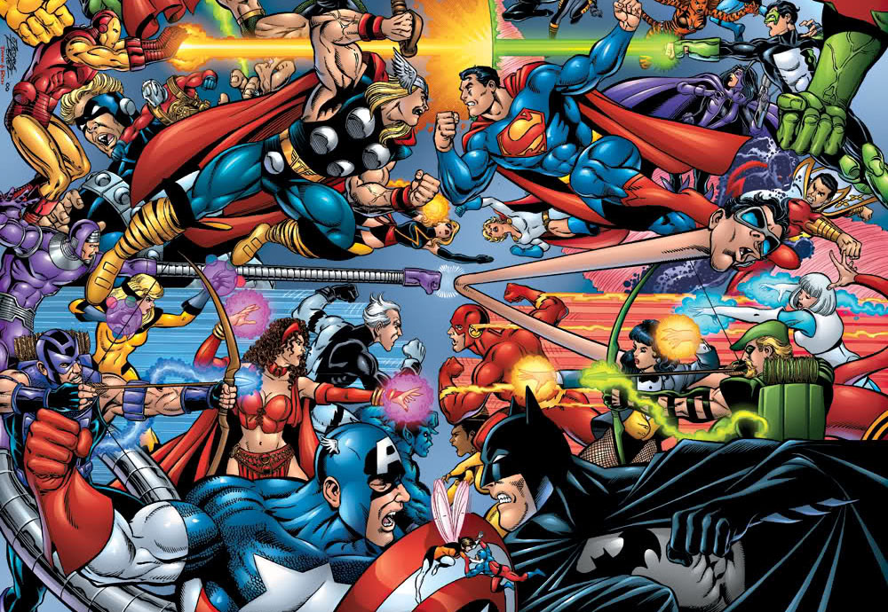

<div class="jumbotron">
    <h1 class="display-6">Sobre comics</h1>
    Un cómic es un relato explicado mediante viñetas o recuadros que contienen ilustraciones. Algunas o todas las viñetas pueden contener, además, un texto más o menos breve. Esta definición simple explica por qué se considera un formato tan versátil: el uso creativo que podemos darle a las viñetas, las ilustraciones, las palabras y los recursos que veremos más adelante, demuestran que es imposible agotar sus posibilidades.
    
  </div>